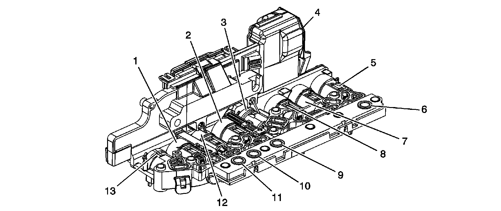
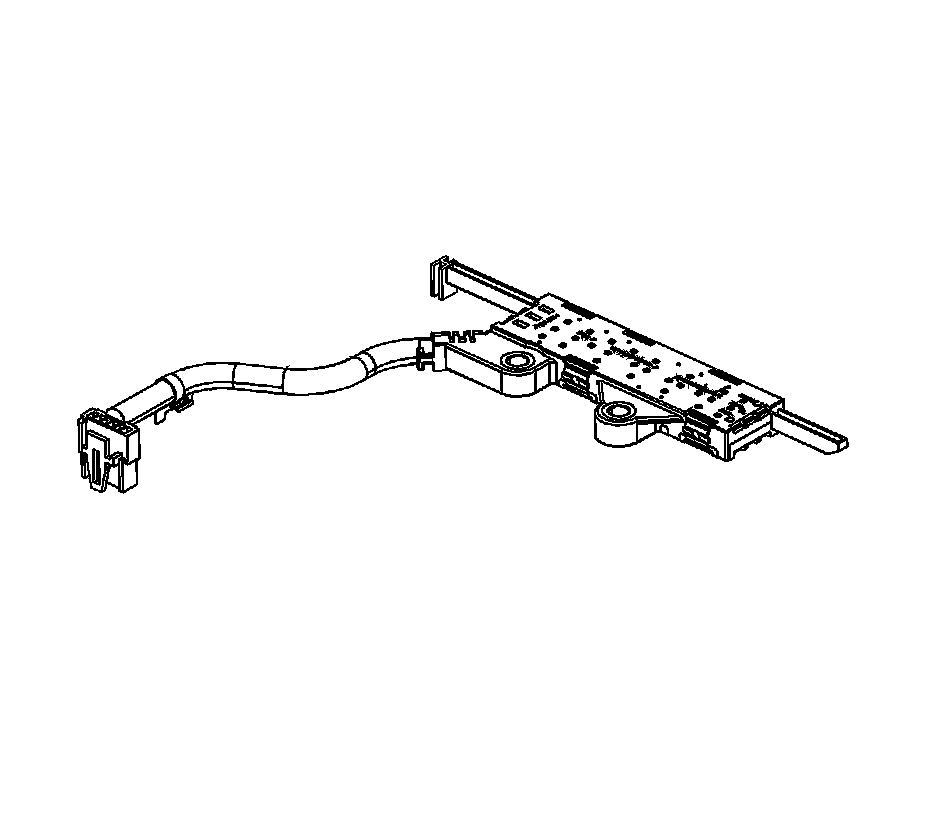
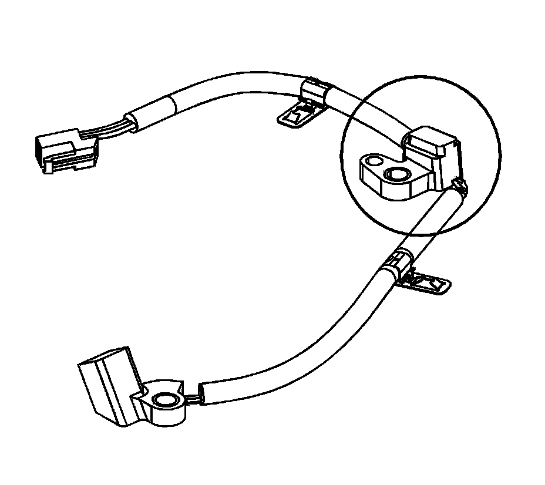

Electronic Component Description
Electronic Component Description
Control Solenoid (W/Body and TCM) Valve Assembly
Control Solenoid (W/Body and TCM) Valve Assembly:

1 - Line Pressure Control (PC) Solenoid
2 - Torque Converter Clutch (TCC) Pressure Control (PC) Solenoid
3 - Shift Solenoid (SS) 2
4 - 16 Pin Connector
5 - Pressure Control (PC) Solenoid 3
6 - Transmission Fluid Pressure (TFP) Switch 5
7 - Pressure Control (PC) Solenoid 4
8 - Pressure Control (PC) Solenoid 2
9 - Transmission Fluid Pressure (TFP) Switch 3
10 - Transmission Fluid Pressure (TFP) Switch 1
11 - Transmission Fluid Pressure (TFP) Switch 4
12 - Pressure Control (PC) Solenoid 5
13 - Shift Solenoid (SS) 1
The control solenoid (w/body and TCM) valve assembly contains the following components:
* Transmission control module (TCM)
* Clutch pressure control solenoids (Clutch PC Sol)
* Shift solenoids (SS)
* Line pressure control solenoid (Line PC Sol)
* Torque converter clutch pressure control solenoid (TCC PC Sol)
* Transmission fluid temperature sensor (TFT Sensor)
* TCM temperature sensor
* Power-up temperature sensor
* Transmission fluid pressure switches (TFP Sw)
These components are not serviced separately. The control solenoid (w/body and TCM) valve assembly utilizes a lead-frame system to connect these components electrically to the TCM. No wires are used for these components. The control solenoid (w/body and TCM) valve assembly bolts directly to the lower and upper valve body assemblies inside the transmission. The control solenoid (w/body and TCM) valve assembly connects to the engine harness 16-way connector via a pass-thru sleeve.
Internal Mode Switch (IMS)
Internal Mode Switch (IMS):

The transmission manual shift shaft switch assembly is a sliding contact switch attached to the manual shift shaft inside the transmission case. The five inputs to the TCM from the transmission manual shift shaft switch assembly indicate the transmission gear selector lever position. This information is used for engine controls as well as determining the transmission shift patterns. The state of each input is available for display on the scan tool. The five input parameters represented are Signal A, Signal B, Signal C, Signal P (Parity) and Signal N (P/N Start).
Input Speed Sensor (ISS)
Input Speed Sensor (ISS):

The input speed sensor (ISS) is a hall-effect type sensor. The ISS mounts to the control valve upper body assembly and connects to the control solenoid (w/body and TCM) valve assembly through a wire harness and connector. The sensor faces the 1-2-3-4 and 3-5-R clutch housing machined teeth surface. The sensor receives 8.3-9.3 volts on the ISS/OSS Supply Voltage circuit from the TCM. As the 1-2-3-4 and 3-5-R clutch housing rotates, the sensor produces a signal frequency based on the machined surface of the 1-2-3-4 and 3-5-R clutch housing. This signal is transmitted through the ISS signal circuit to the control solenoid (w/body and TCM) valve assembly. The control solenoid (w/body and TCM) valve assembly uses the ISS signal to determine line pressure, transmission shift patterns, torque converter clutch (TCC) slip speed and gear ratio.
Output Speed Sensor (OSS)
Output Speed Sensor (OSS):

The output speed sensor (OSS) is a hall-effect type sensor. The OSS mounts to the control valve upper body assembly and connects to the control solenoid (w/body and TCM) valve assembly through a wire harness and connector. The sensor faces the output shaft machined teeth surface. The sensor receives 8.3-9.3 volts on the ISS/OSS supply voltage circuit from the TCM. As the output shaft rotates, the sensor produces a signal frequency based on the machined surface of the output shaft. This signal is transmitted through the OSS signal circuit to the TCM. The TCM uses the OSS signal to determine line pressure, transmission shift patterns, torque converter clutch (TCC) slip speed and gear ratio.